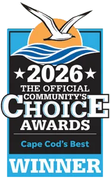
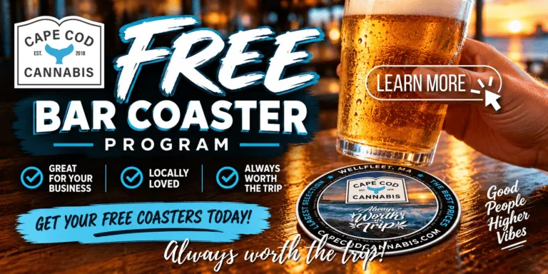
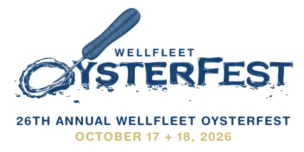
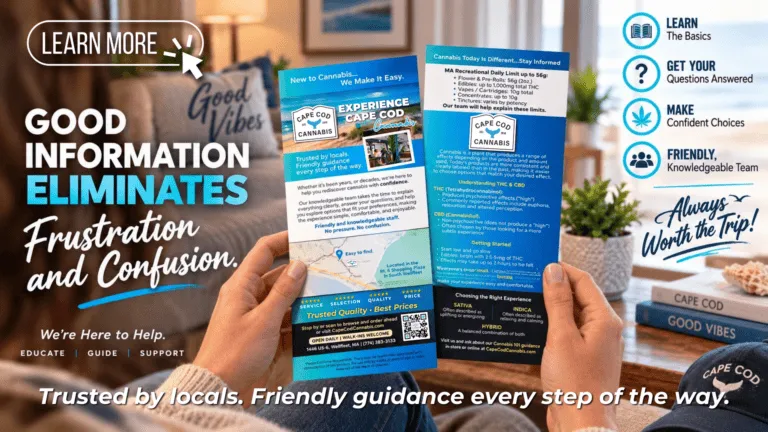
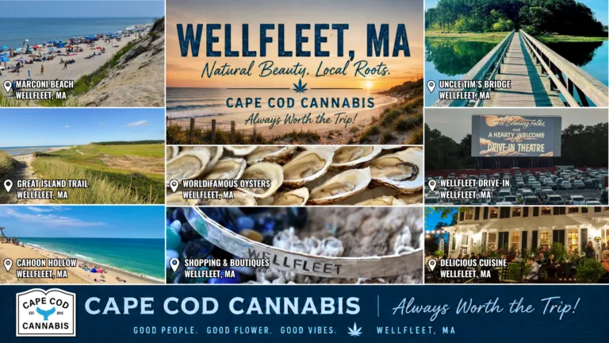
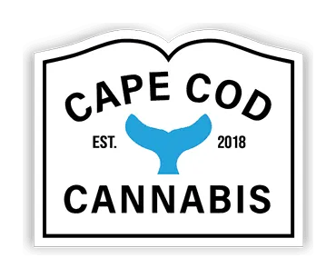

Things To Do near Cape Cod Cannabis in Wellfleet, MA


Discover attractions, things to do and places to stay near Cape Cod Cannabis in Wellfleet, MA, nestled between Cape Cod Bay and the Atlantic Ocean, is a charming seaside town known for its fresh seafood, stunning beaches, and vibrant arts scene. Food lovers can savor local oysters and clams at waterfront favorites like Mac’s Shack, Pearl Restaurant & Bar or enjoy classic New England fare at The Bookstore & Restaurant. For things to do, stroll the galleries along Main Street, catch a film at the historic Wellfleet Drive-In Theater, or explore the tidal flats and trails of the Wellfleet Bay Wildlife Sanctuary. Whether you’re craving adventure or relaxation, Wellfleet offers a perfect Cape escape, as well as, Cape Cod Cannabis Dispensary offers the largest selection and the best prices on Cape Cod.
Always worth the trip!
(Click images and links to view)
Click to view Wellfleet area map
Wellfleet Restaurants
Looking for great restaurants near Cape Cod Cannabis in Wellfleet, MA? Just minutes away, you’ll find top-rated local favorites—perfect spots to grab a bite after your dispensary visit. Local Wellfleet (and 420-friendly) businesses please contact us if you’d like to exchange links. We’d love to connect.
(Click the links below to visit the website)

Mac’s Shack
Mac’s Shack is a Wellfleet favorite known for fresh local seafood, oysters, sushi, sashimi, poke bowls, and Cape Cod flavor. It is a great choice for lunch, dinner, or a casual night out near Wellfleet Harbor.
The Wicked Oyster
Located on Main Street, The Wicked Oyster offers a warm, welcoming dining experience with seafood, drinks, hospitality, live music events, and seasonal specials. It is a popular stop for visitors exploring downtown Wellfleet.
Wellfleet Bookstore & Restaurant
A longtime Wellfleet staple, the Wellfleet Bookstore & Restaurant has served generations of visitors with classic seafood, harbor views, and family friendly Cape Cod dining since 1964.
The Pearl Restaurant & Bar
Located in Wellfleet, The Pearl Restaurant & Bar offers a coastal dining experience featuring fresh seafood, craft cocktails, oysters, seasonal dishes, and a welcoming atmosphere inspired by the Outer Cape. Known for its thoughtful menu and relaxed yet elevated setting, The Pearl is a popular stop for both Cape Cod locals and visitors exploring Wellfleet and the surrounding area.
CShore Kitchen & Bar
CShore Kitchen & Bar in Wellfleet offers a relaxed coastal dining experience with fresh seafood, creative seasonal dishes, craft cocktails, and outdoor seating just minutes from the Cape Cod National Seashore. Known for its welcoming atmosphere and locally inspired menu, CShore is a favorite stop for both visitors and year round Cape Cod residents exploring the Outer Cape.
The Block & Tackle Smokehouse & Tavern
The Block & Tackle Smokehouse & Tavern in Wellfleet is a popular Outer Cape destination known for smoked meats, fresh seafood, creative comfort food, craft cocktails, and a relaxed Cape Cod atmosphere. Featuring indoor and outdoor dining, live music, and a welcoming neighborhood feel, The Block & Tackle is a favorite stop for both locals and visitors exploring Wellfleet and the surrounding Cape Cod beaches and attractions.
Winslow’s Tavern
Located in the heart of Wellfleet, Winslow’s Tavern is a longtime Cape Cod favorite offering elevated comfort food, fresh seafood, craft cocktails, and a warm, historic atmosphere. Known for its welcoming dining experience and seasonal outdoor patio, Winslow’s is a popular destination for both locals and visitors exploring downtown Wellfleet and the Outer Cape.
Sea Bird Cantina
Sea Bird Cantina in Wellfleet brings vibrant coastal flavors to the Outer Cape with tacos, fresh seafood, margaritas, craft cocktails, and a laid back atmosphere perfect for lunch, dinner, or drinks with friends. Located along Route 6, Sea Bird Cantina is a popular stop for Cape Cod locals and visitors looking for casual dining and fresh seasonal flavors.
Paesan’s Pizzeria
Paesan’s Pizzeria is a Wellfleet favorite serving handcrafted pizza, Italian specialties, sandwiches, salads, and comfort food in a casual, family friendly setting. Conveniently located on Route 6, Paesan’s is a go to spot for visitors and locals looking for classic pizza and relaxed Cape Cod dining after a beach day or exploring the Outer Cape.
Bob’s Sub and Cone
Bob’s Sub and Cone is a longtime Wellfleet family favorite serving classic Cape Cod comfort food, including hot and cold subs, burgers, seafood, ice cream, and casual outdoor dining. Conveniently located on Route 6 in South Wellfleet, Bob’s is a popular stop for locals and visitors looking for a relaxed meal, quick bite, or sweet treat while exploring the Outer Cape.
The Beachcomber
Perched atop the dunes of Cahoon Hollow Beach in Wellfleet, The Beachcomber is one of Cape Cod’s most iconic waterfront restaurants and bars. Known for its ocean views, fresh seafood, live music, cocktails, and lively beach atmosphere, The Beachcomber is a must visit destination for both locals and visitors enjoying the Outer Cape and Cape Cod National Seashore.
Moby Dick’s Restaurant
Since 1983 Moby Dick’s has been THE Cape Cod seafood restaurant serving fresh seafood and delicious entrees to friends and family. We take the New England clam shack to a new level, offering you and your family a great experience, and the freshest seafood on Cape Cod. Come experience Moby’s for great food and a great time. Bring Your Own Beer and Wine! We invite you to grab your favorite beer or wine and head right over. No charge and we’ll provide you ice buckets, cups, and openers.
Chez Chloe Bistro (formerly PB Boulangerie Bistro)
Chez Chloe Bistro (formerly PB Boulangerie Bistro – same owner; named after his daughter) in Wellfleet is a nationally recognized bistro known for its elevated French inspired dining on Cape Cod. Popular with both locals and visitors, Chez Chloe Bistro offers a warm atmosphere, seasonal ingredients, and one of the most unique culinary experiences on the Outer Cape.
Wellfleet Attractions & Beaches
Discover top attractions near Cape Cod Cannabis in Wellfleet, MA! From scenic beaches and golf courses to wildlife sanctuaries and drive-ins, there’s no shortage of adventures just minutes from the dispensary. Local Wellfleet (and 420-friendly) businesses please contact us if you’d like to exchange links. We’d love to connect.
(Click the links below to visit the website)
Cape Cod National Seashore
Wellfleet is home to some of the most scenic coastline on Cape Cod, including beaches, dunes, walking trails, and Atlantic Ocean views. The Cape Cod National Seashore is a must visit for beachgoers, photographers, hikers, and anyone looking to experience the natural beauty of the Outer Cape.
Wellfleet Beaches, Stickers & Wellfleet Information
Wellfleet is home to some of Cape Cod’s most beautiful beaches, from the Atlantic Ocean shores of Marconi Beach and Cahoon Hollow Beach to the calm waters of Cape Cod Bay and Wellfleet Harbor. Visitors can enjoy swimming, surfing, sunbathing, beachcombing, and stunning coastal views throughout the Outer Cape. In addition to its ocean and bayside beaches, Wellfleet is known for its freshwater kettle ponds, offering peaceful spots for swimming, kayaking, paddleboarding, and relaxing in nature. Whether you’re seeking adventure or a quiet day by the water, Wellfleet’s beaches and ponds offer something for everyone.
Marconi Beach
One of Wellfleet’s most iconic beaches, Marconi Beach offers dramatic dunes, wide sandy shoreline, and sweeping ocean views. It is a favorite stop for visitors looking to spend the day by the water.
Wellfleet Bay Wildlife Sanctuary
Operated by Mass Audubon, Wellfleet Bay Wildlife Sanctuary features extensive trails through salt marsh, pine woodlands, beach habitat, and scenic overlooks near Wellfleet Harbor. It is a peaceful stop for birdwatching, nature walks, and family friendly outdoor exploring.
Wellfleet Drive-In Theatre
A true Cape Cod classic, the Wellfleet Drive-In offers seasonal movies under the stars along Route 6. The property also includes indoor cinemas, mini golf, and flea market events, making it a fun stop for visitors of all ages.
Wellfleet Cinemas
In addition to the famous drive in theater, Wellfleet Cinemas offers indoor movie screenings, mini golf, and family entertainment throughout the year, making it a favorite stop for visitors and locals alike.
The Wellfleet Flea Market
Held seasonally at the Wellfleet Drive In, the Wellfleet Flea Market is a longtime Cape Cod tradition featuring antiques, vintage finds, clothing, art, collectibles, handmade goods, and local vendors. It is a fun stop for treasure hunters and visitors exploring Route 6.
Wellfleet Harbor
Wellfleet Harbor is a scenic destination known for boating, kayaking, shellfishing, waterfront views, and classic Cape Cod charm. Visitors can explore the marina area, enjoy fresh local oysters, or take in sunsets along the harbor while experiencing the relaxed atmosphere of the Outer Cape.
Great Island Trail
The Great Island Trail in Wellfleet offers one of the most scenic hiking experiences on Cape Cod, featuring dunes, salt marshes, wooded trails, and panoramic views of Cape Cod Bay. Popular with hikers, birdwatchers, and photographers, the trail showcases the natural beauty of the Cape Cod National Seashore.
Mayo Beach
Located along Wellfleet Harbor, Mayo Beach is a calm, family friendly beach popular for swimming, kayaking, paddleboarding, and relaxing by the water. Its central location near downtown Wellfleet makes it an easy stop for visitors exploring the area.
Cahoon Hollow Beach
Cahoon Hollow Beach is one of Wellfleet’s most well known ocean beaches, offering dramatic dunes, Atlantic Ocean surf, and access to The Beachcomber restaurant. It is a favorite destination for beachgoers looking to enjoy the classic Outer Cape beach experience.
Wellfleet Preservation Hall
Wellfleet Preservation Hall is a year round cultural center hosting concerts, art exhibits, community events, film screenings, lectures, and performances in the heart of Wellfleet. The beautifully restored historic building is a hub for arts and culture on the Outer Cape.
Cape Cod Rail Trail
Accessible from nearby areas, the Cape Cod Rail Trail offers miles of scenic biking and walking paths through forests, ponds, marshes, and coastal towns. It is a popular activity for visitors looking to experience Cape Cod outdoors.
Uncle Tim’s Bridge
Uncle Tim’s Bridge is a picturesque wooden bridge and walking trail extending through Wellfleet marshland with beautiful views of the harbor and surrounding wildlife. It is a peaceful spot for walking, photography, and sunset views.
Chequessett Yacht & Country Club
Discover the charm of Chequessett Club, your destination for recreation and leisure nestled atop the bluffs of Wellfleet Harbor in the scenic area of Cape Cod, Massachusetts! At Chequessett, you’re invited to experience an array of activities including Golf, Tennis, Pickleball, and Sailing. Our welcoming staff ensures a comfortable experience for our guests within this tranquil setting.
Outermost Performing Art Center
Since 2007, The Julie Harris Stage on Route 6 in Wellfleet has served as the creative home of Wellfleet Harbor Actors Theater. Now, after twenty years, the ‘Julie’ is embracing a renewed vision to serve as a hub for the performing arts on the Outer Cape. While live theater will always be our beating heart, and WHAT’s productions will always have a home on our stage, we now celebrate the broad expanse of creative expression through the performing arts across genres. Wellfleet Harbor Actors Theater is not going away. We believe that WHAT is made stronger through collaboration and working in concert with artists from multiple disciplines.
Our mission is to create meaningful connections with, and through, the performing arts for our Outer Cape community. Here is where we gather to celebrate community, foster creativity, and create connection through the performing arts.
Welcome to Outermost Performing Arts Center.
Wellfleet Art Galleries, Culture & Local Events

Beloved by locals and visitors alike, our annual Wellfleet OysterFest™ has grown to become one of the most popular events on Cape Cod. Started back in 2001, OysterFest is a 2-day party that pulses with everything that makes life in Wellfleet so special; art, seafood, and community.
Upwards of 20,000 people gather in the heart of downtown for one weekend in October to celebrate our world famous oysters. This family-friendly hootenanny takes over Main Street with local food, beer and wine gardens, live music, arts and crafts vendors, and, of course, oysters. Lots and lots of oysters and other ‘Fleet-raised shellfish dished out directly from the men and women who harvest them along our shores.
There are culinary demonstrations, educational lectures, an annual road race, and a Family Fun area complete with kid-friendly crafting, games, and a bounce house. Click here to buy tickets or for more information about the Wellfleet Oyster Fest 2026!
Explore captivating art galleries, culture and local events near Cape Cod Cannabis in Wellfleet, MA! Just minutes from the dispensary, you’ll find a vibrant art scene featuring local and regional artists, the culture of Wellfleet and local events. Local Wellfleet (and 420-friendly) businesses please contact us if you’d like to exchange links. We’d love to connect.
(Click the links below to visit the website)
Wellfleet Cultural District
Wellfleet is known for its thriving arts community, galleries, restaurants, shops, theater, harbor, and walkable downtown cultural loop. The Wellfleet Cultural District is a great resource for current events, gallery openings, markets, and local happenings.
Wellfleet Art Gallery Association
Wellfleet is often celebrated for its gallery scene, with local and regional artists represented throughout town. During the season, visitors can enjoy gallery strolls, openings, and exhibitions across the Cultural District. The Wellfleet Art Gallery Association was started in June of 1980 with the purpose to promote the Town of Wellfleet as a Center for Fine Arts and Crafts Galleries on the Lower Cape.
Cove Gallery
Located in downtown Wellfleet, Cove Gallery features contemporary art, local photography, coastal inspired works, handcrafted jewelry, and gifts from regional artists. It is a favorite stop for visitors exploring Wellfleet’s vibrant arts community.
Left Bank Gallery
A longtime Wellfleet gallery destination, Left Bank Gallery showcases contemporary paintings, sculptures, mixed media works, and fine art from nationally recognized and local artists in a welcoming Cape Cod setting.
The Frying Pan Gallery
Discover a captivating collection of marine-inspired steel sculptures by Steve Swain, featuring lighting designs, schools of fish, bass, tuna, whales, dolphins, octopuses, horseshoe crabs, and much more. Enjoy original works from beloved Cape Cod artists, including – paintings, encaustics, etchings, jewelry, driftwood, photography, ceramics – and a friendly, knowledgeable staff.
Wellfleet Art Stroll
The Wellfleet Art Stroll is a seasonal Saturday evening tradition where participating galleries open their doors for visitors, neighbors, artists, and art lovers. It is a great way to experience the creative spirit of town.
Wellfleet Events Calendar
From makers markets and art openings to community gatherings and seasonal activities, the Wellfleet Events Calendar is a helpful place to see what is happening during your visit.
Wellfleet Farmers Market
Starting wednesday, June 3rd – September 30th! Come delight your senses in fresh local produce, plant starts, coffee, baked goods, local meat, fresh fish, mushrooms, lots o’ eggs, cheese, local fruits, cut flowers & herbs, garlic & onions, fantastic greens, honey, teas & tinctures, market merch & more!
Wellfleet OysterFest
26TH ANNUAL Wellfleet OysterFest
Save the date: October 17 + 18, 2026
Held each fall, Wellfleet OysterFest celebrates the town’s world famous oysters, local seafood, artists, music, food vendors, and Cape Cod culture. The annual festival attracts visitors from across New England and has become one of the Outer Cape’s signature events.
Wellfleet Chamber
Join us in Wellfleet for some good ol’ fashioned hometown hurrah! Each year the Chamber’s annual Fourth of July Parade seems to get better and participants more creative. The nostalgic classic car parade begins at 9:30am and the float parade starts at 10:00am.
Wellfleet Shops & Boutiques
Explore unique shopping experiences near Cape Cod Cannabis in Wellfleet, MA! Just minutes from the dispensary, you’ll find a variety of local boutiques and artisan shops. Local Wellfleet (and 420-friendly) businesses please contact us if you’d like to exchange links. We’d love to connect.
(Click the links below to visit the website)
Jewelry Studio of Wellfleet
Keeping the Art of Handmade Alive. Handcrafted silver and gold jewelry made in our Wellfleet workshop, featuring beautiful gemstones, native oyster pendants, and original designs.
Wellfleet Marketplace
Wellfleet Marketplace is a local specialty shop offering gourmet foods, fresh baked goods, sandwiches, coffee, wine, and unique Cape Cod gifts. Conveniently located near downtown Wellfleet, it is a popular stop for both locals and seasonal visitors.
The Mews & Local Wellfleet Shops
Downtown Wellfleet is home to a variety of independently owned boutiques, artisan shops, bookstores, galleries, gift stores, and specialty markets that reflect the creative and coastal spirit of the Outer Cape. Visitors can enjoy walkable shopping while exploring local restaurants, harbor views, and nearby attractions.
AIM Thrift Shop
AIM Thrift Shop offers clothing, jewelry, housewares, decor, art, vintage collectibles, books, toys, puzzles, discs, vinyl records, linens, sporting equipment, small furniture, and other items for you and your home at bargain prices. Proceeds from sales support Outer Cape Health Services and local nonprofits that provide health care, food, and housing on Outer Cape Cod.
Mass Appeal
Mass Appeal is a non-profit “Share Shop” in Wellfleet, MA, that provides free, gently used clothing, shoes, and linens to residents of the Outer Cape.
Drift Wellfleet Home & Gift
New England-made goods, coastal jewelry, decor, and more. Drift has become a favorite stop for shoppers visiting downtown Wellfleet.
Wellfleet Marine Corporation
In 1954, Warren “Bing” and Irene Harrington started the Wellfleet Marine Corporation as a modest tackle and boat rental shop on the town pier in Wellfleet, Massachusetts. Today, Wellfleet Marine has grown to encompass two full service boatyards, a retail gift store, a fish market, and yes, we still have boat rentals and fishing tackle, all still family owned and operated. Our store is brimming full of under-the-sea surprises…and a few from on the land too.
Cape Cod Cannabis
Looking for the best dispensary on Cape Cod? Cape Cod Cannabis Recreational Dispensary, located in the Rt. 6 shopping plaza in South Wellfleet with plenty of parking, offers the largest selection and best prices on Cape Cod. Our product assortment includes flower, pre-rolls, edibles, beverages, vaporizers, tinctures, concentrates, CBD products, topicals, seeds, smoking accessories and branded apparel.
Wellfleet Accommodations & Places To Stay
Looking for places to stay near Cape Cod Cannabis in Wellfleet, MA? The Outer Cape offers a variety of local accommodations, from boutique hotels and cozy inns to classic Cape Cod motels and waterfront stays, all conveniently located near beaches, restaurants, galleries, and Wellfleet attractions. Whether you’re visiting for a weekend getaway or an extended Cape Cod vacation, you’ll find comfortable lodging just minutes from Cape Cod Cannabis and Route 6. Local Wellfleet (and 420-friendly) businesses please contact us if you’d like to exchange links. We’d love to connect.
(Click the links below to visit the website)

Wilder Inn (formerly Wellfleet Motel & Lodge)
Located on Route 6 in South Wellfleet, the Wilder Inn (replacing the long-standing Wellfleet Motel & Lodge), the property was completely renovated and rebranded as part of Hilton’s “Outset Collection”, and offers comfortable Cape Cod accommodations with easy access to beaches, bike trails, restaurants, and local attractions. Popular with families and visitors exploring the Outer Cape, the property features an outdoor pool, on-site restaurant, and convenient access throughout Cape Cod.
The Copper Swan
The Copper Swan is a boutique hotel in downtown Wellfleet offering elegant accommodations overlooking Duck Creek and the Wellfleet marshes. Known for its peaceful setting, coastal charm, and walkable access to galleries, restaurants, and Wellfleet Harbor, The Copper Swan is a favorite destination for visitors seeking a relaxing Outer Cape getaway.
Endless Coast Boutique Hotel
Endless Coast Boutique Hotel offers modern coastal accommodations with stylish rooms, outdoor gathering spaces, and convenient access to Wellfleet beaches, restaurants, and the Cape Cod National Seashore. Its central Outer Cape location makes it a popular choice for visitors exploring Wellfleet and nearby Provincetown.
Southfleet Motor Inn
A longtime Wellfleet lodging favorite, Southfleet Motor Inn provides comfortable accommodations near Route 6 with indoor and outdoor pools, family friendly amenities, and easy access to Cape Cod beaches, biking trails, and local attractions throughout the Outer Cape.
The Even’tide
The Even’tide is a popular Wellfleet hotel offering a relaxed Cape Cod experience close to the Cape Cod Rail Trail, beaches, restaurants, and outdoor activities. Guests appreciate its convenient location, welcoming atmosphere, and easy access to Wellfleet, Eastham, and Provincetown attractions.


Wellfleet, MA on the Outer Cape
Wellfleet, MA is a charming seaside town located on the Outer Cape of Cape Cod. Known for its unspoiled natural beauty, artistic spirit, and maritime heritage, Wellfleet offers a unique blend of history, culture, and outdoor adventure. Nestled between the Atlantic Ocean and Cape Cod Bay, much of the town is protected land, including parts of the Cape Cod National Seashore, with miles of pristine beaches, salt marshes, and kettle ponds that attract nature lovers and outdoor enthusiasts year-round.
The town’s center features a classic New England vibe, with white-steepled churches, art galleries, boutique shops, and locally owned cafes. Wellfleet is also renowned for its vibrant arts scene, with a legacy of supporting local artists and performers. The town’s many galleries reflect its deep artistic roots, making it a haven for creatives and visitors seeking inspiration.
Wellfleet is perhaps best known for its oysters, harvested from its clean, cold tidal flats and prized around the world. The annual Wellfleet OysterFest, held every October, celebrates this heritage with food, music, and community spirit. Whether you’re exploring the trails of Great Island, watching the sunset over Mayo Beach, or savoring fresh seafood by the water, Wellfleet captures the essence of coastal New England with a laid-back charm and deep connection to the sea.
Looking for the Best Dispensary on Cape Cod? Cape Cod Cannabis Recreational Dispensary, located in the Rt. 6 shopping plaza in South Wellfleet with plenty of parking, offers the largest selection and best prices on Cape Cod.
Our product assortment includes:
- Flower
- Pre-rolls
- Edibles
- Beverages
- Vaporizers
- Concentrates
- Tinctures
- CBD
- Topicals
- Seeds
- Smoking Accessories
- Branded Apparel
Cape Cod Cannabis in Wellfleet, MA … Always worth the trip!
Local Wellfleet (and 420-friendly) businesses please contact us if you’d like to exchange links. We’d love to connect.
*The local attractions, businesses, and events listed on this website are provided for informational purposes only. We are not directly affiliated with, sponsored by, or officially endorsed by any of the establishments mentioned unless explicitly stated. While we aim to provide accurate and up-to-date information, we do not guarantee the accuracy, availability, or quality of any third-party services or experiences. Visitors are encouraged to verify details directly with the respective businesses or organizations before making plans.
